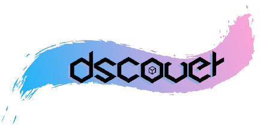

01
기초·분야별 스터디
26-2 안내에서는 데이터 분석·시각화, 머신러닝 기초, 크롤링을 기초 학습으로 소개합니다. 정규 스터디로는 pandas·태블로 기반 시각화, 머신러닝, 컴퓨터 비전, SQL을 개설할 계획이라고 안내했습니다.

DScover는 성균관대학교 글로벌융합학부 소속 데이터분석 학회입니다. 데이터 분석·시각화·머신러닝을 공부하고, 스터디와 프로젝트를 진행합니다.
학습은 데이터 분석과 시각화, 머신러닝, 크롤링 등 기초에서 관심 분야의 심화 스터디로 이어집니다. 26-2 공식 안내에는 경험이 적은 학회원이 분석의 흐름과 도구 사용법을 익히고, 분석 경험이 있는 학회원은 더 심화된 내용을 공부할 수 있도록 구성했다고 설명합니다.
가이드 프로젝트에서는 같은 데이터와 주제를 각 팀이 다르게 분석하며 접근 방식과 모델링 전략을 나눕니다. 관심 분야를 바탕으로 한 메인 프로젝트와 현직자 초청 세션도 안내하며, 최근 활동 기록에는 연구실 협업 프로젝트의 주제를 조사하고 조별로 토론한 경험도 담겨 있습니다.
26-2 안내에서는 데이터 분석·시각화, 머신러닝 기초, 크롤링을 기초 학습으로 소개합니다. 정규 스터디로는 pandas·태블로 기반 시각화, 머신러닝, 컴퓨터 비전, SQL을 개설할 계획이라고 안내했습니다.
실제 경진대회 데이터를 바탕으로 분석의 방법과 흐름을 익히는 프로젝트입니다. 2026년 9월 최종발표 기록에서는 같은 데이터셋과 주제에서 출발한 팀들이 서로 다른 파라미터·모델·접근 방식을 공유했습니다.
학회원의 관심 분야를 바탕으로 주제를 정해 배운 내용을 적용하는 프로젝트로 안내합니다. 26-2 운영안에는 중간 발표에서 교수진 피드백을 받고 최종 발표·심사로 결과를 나누는 구성이 담겨 있습니다.
현직자의 경험을 듣고 질문을 나누는 초청 세션을 진행합니다. 2026년 9월 활동 보고에는 데이터 분야 선배의 강연과 질의응답, AI-Healthcare Lab 협업 프로젝트 안내 및 조별 조사·토론이 기록되어 있습니다.
공식 인스타그램과 Linktree에서 기수별 소개와 지원서 안내를 확인할 수 있습니다. 공개된 2026년 2학기 안내는 12기 기준이며, 이후 모집 일정과 참여 조건은 새 공고를 확인해 주세요.